Chapter 6: 5G Use Cases & 5G-Advanced¶
What is 5G actually used for, and where is it going next? This chapter tours the real use cases — mobile video and crowded venues, factories and time-sensitive networking, massive and battery-free IoT, connected cars, XR and cloud gaming, public safety, positioning, broadcast and the 'smart' verticals — separating proven value from hype. It then explains network APIs as a new way to earn money from networks, walks through the 5G-Advanced Releases 18, 19 and 20 and their AI/ML, energy, mobility and sensing features, and ends with an honest scorecard of what 5G has and has not delivered by 2026.
6.1 Enhanced Mobile Broadband in Practice: Video, Crowds and Live Events¶
Enhanced mobile broadband (eMBB) is the '5G is faster' part of 5G: more capacity and higher speeds for phones, tablets and home routers. In practice it mostly carries video — streaming, short clips, video calls — and keeps working in crowded places like stadiums, festivals and train stations where 4G used to grind to a halt.
Think of it like…
eMBB is widening a motorway from two lanes to eight: individual cars are not much faster on an empty road, but rush hour stops being a traffic jam.
Real-world example
At a fictional 60,000-seat stadium in Madrid, fans upload 4K clips at half-time. The operator added 3.5 GHz massive-MIMO sectors under the roof plus portable cells outside. Median download stays above 100 Mbit/s and, importantly, uplink stays usable, so social-media uploads succeed instead of spinning endlessly.
How it works¶
- Mid-band spectrum (around 2.5-4.9 GHz) with 80-100 MHz carriers provides most of 5G's extra capacity.
- Massive MIMO beams serve many users at once in the same frequency, multiplying cell capacity.
- Video apps use adaptive bitrate streaming, picking higher quality when the network allows.
- For big events, operators add temporary capacity: cells on wheels, venue small cells and extra carriers.
- Broadcasters and creators use bonded 5G connections and, increasingly, dedicated slices for live upload.
Who uses it
RF capacity planners, event and venue network teams, video-platform engineers and broadcast technicians.
Key takeaway
Remember: video is roughly three-quarters of mobile data traffic, so eMBB capacity planning is mostly video capacity planning.
Going deeper
- IMT-2020 sets eMBB targets of 20 Gbit/s peak downlink and 100 Mbit/s user-experienced downlink in dense urban areas; real-world medians in leading 5G markets are typically a few hundred Mbit/s on mid-band.
- Ericsson's Mobility Reports have attributed roughly three-quarters of mobile data traffic to video, driven by short-form video apps, streaming services and rising default resolutions on large phone screens.
- Adaptive bitrate streaming (MPEG-DASH, Apple HLS) splits video into short chunks at several bitrates; the player picks each chunk's quality from measured throughput, so extra 5G capacity shows up as sharper video rather than faster downloads.
- Stadium networks often combine DAS or small cells under seating with directional macro sectors; mmWave was popular at US venues around 2020-2023, while mid-band massive MIMO is now the default.
- Live TV crews use bonded cellular backpacks (e.g. LiveU, TVU) that aggregate several SIMs; 5G SA slices with guaranteed uplink have been trialled and sold for broadcast events since around 2023.
- 5G does not change the per-user data cap economics: operators sell unlimited or large bundles, and the main constraint becomes busy-hour cell capacity, not monthly volume.
Common mistakes & misconceptions
- Quoting peak speeds as user experience: peak rates need ideal conditions; median and 10th-percentile speeds matter more to customers.
- Forgetting the uplink at events: crowds upload video, and TDD patterns favour downlink, so uplink often fails first.
- Assuming the 5G icon means 5G capacity: NSA devices show 5G even when most traffic rides on LTE anchors or low-band 5G.
Key standards, network functions, technologies & tools¶
| Name | What it does | Example |
|---|---|---|
| eMBB in practice ITU-R IMT-2020 (M.2410); 3GPP · Concept · Current · 5G |
5G usage scenario for higher speeds and capacity — the main use of 5G networks in 2026. | A commuter streams a 4K series on a train without buffering thanks to mid-band 5G. |
| Video share of mobile traffic Ericsson Mobility Report and similar studies · Metric · Current · All |
Video is roughly three-quarters of mobile data traffic, making it the main capacity driver. | An operator plans new carriers mainly by forecasting short-video and streaming growth. |
| Stadium and venue 5G Operators, neutral hosts, RAN vendors · Concept · Current · 5G |
Dedicated high-capacity cells, DAS or small cells serving tens of thousands of users in one venue. | A football stadium's under-seat 5G antennas serve fans' uploads during a cup final. |
| Cell on wheels (COW) Operators' temporary-capacity fleets · Equipment · Current · All |
Truck- or trailer-mounted base station deployed for events, disasters or construction outages. | Three COWs boost capacity at a summer music festival in a farmer's field. |
| Bonded cellular broadcasting LiveU, TVU Networks, Dejero · Technology · Current · 5G |
Combining several 4G/5G modems in one device to send live broadcast-quality video. | A news crew goes live from a marathon using a backpack bonding six 5G SIMs. |
| Broadcast uplink slice Operators with 5G SA networks · Service · Emerging · 5G |
A 5G SA slice reserving uplink capacity for broadcasters' cameras at busy events. | TV cameras at a royal parade use a reserved slice while crowds share the public network. |
| Mid-band 5G capacity layer Bands n77, n78, n41, n79 · Concept · Current · 5G |
2.5-4.9 GHz carriers of 40-100 MHz with massive MIMO, providing most of 5G's added capacity. | Upgrading a site from LTE-only to 100 MHz of n78 multiplies its busy-hour capacity several times. |
| mmWave hotspots Bands n257, n258, n260, n261 · Spectrum band · Current · 5G |
Short-range 24-40 GHz cells used in venues and dense spots, less common than once expected. | An airport gate area uses mmWave to offload thousands of travellers' downloads. |
| FWA as eMBB use case See RAN chapter for FWA in depth · Concept · Current · 5G |
Home broadband over 5G — the eMBB use case with the clearest revenue in 2026. | An operator counts FWA as its fastest-growing 5G revenue line. |
| Busy-hour capacity Operator planning practice · Metric · Current · All |
The demand a cell must carry in its busiest hour, used to size eMBB capacity. | A planner adds a second 3.5 GHz carrier where busy-hour PRB load exceeds 80%. |
| Efficient video codecs (HEVC, AV1) ITU-T/ISO (HEVC, 2013); Alliance for Open Media (AV1, 2018) · Technology · Current · All |
Newer codecs cut the bitrate needed for the same quality, stretching network capacity. | A streaming app switches phones with AV1 hardware decoding to AV1, using less data per hour of video. |
6.2 URLLC and Industrial IoT: TSN, Factories, Ports and Mines¶
URLLC (ultra-reliable low-latency communication) is 5G's promise of near-perfect, very fast links for machines — robots, cranes, vehicles and safety systems. Industry also needs 5G to plug into time-sensitive networking (TSN), the deterministic Ethernet used in factories. In 2026 these capabilities are real in standards and some private networks, but mass deployment is slower than predicted.

Think of it like…
eMBB is a postal service that delivers lots of parcels quickly on average; URLLC is a hospital's organ courier — fewer parcels, but every one must arrive on time, every time.
Real-world example
At a fictional car plant in Turin, a 5G private network replaces cables to 40 robot cells so production lines can be rearranged in days. Safety-rated stop signals and PLC traffic use a URLLC configuration with redundant paths; video inspection uses eMBB. Engineers measure 99.999% delivery within 10 ms for control traffic.
How it works¶
- Define the industrial requirement: cycle time, survival time, reliability, and number of devices (3GPP TS 22.104 lists typical values).
- Configure the RAN for URLLC: mini-slots, configured-grant uplink, robust MCS tables and short processing times.
- Add redundancy: PDCP duplication over two carriers or cells and redundant user-plane paths.
- Integrate with TSN: the 5G system acts as a TSN bridge, with translators at the device and UPF sides and time synchronisation via gPTP.
- Keep the UPF and edge applications on site so the end-to-end path stays short and local.
Who uses it
Industrial automation engineers, OT network architects, private-5G integrators and factory digitalisation teams.
Key takeaway
Memorise the IMT-2020 URLLC target: 99.999% success for a 32-byte packet within 1 ms user-plane latency — and know that real deployments often target 5-10 ms.
Going deeper
- 3GPP TS 22.104 defines cyber-physical control requirements: for example motion control with cycle times down to 0.5-2 ms and communication service availability of 99.999% to 99.9999999%, plus 'survival time' tolerated after a missed packet.
- Rel-16 introduced 5GS integration with IEEE TSN: device-side (DS-TT) and network-side (NW-TT) translators, a TSN application function, Ethernet PDU sessions and per-hop residence-time reporting.
- Time synchronisation over 5G distributes IEEE 802.1AS (gPTP) time to devices; 3GPP budgets roughly a microsecond of error for the 5G system so end devices meet industrial sync needs.
- Reliability tools include PDCP duplication (up to four legs in Rel-16), redundant PDU sessions through separate UPFs, intra-UE prioritisation, and configured-grant uplink that removes scheduling-request delay.
- 5G-ACIA (5G Alliance for Connected Industries and Automation, founded 2018 under ZVEI) publishes white papers bridging 3GPP and industrial-automation communities, including PROFINET and OPC UA over 5G.
- Notable deployments include Mercedes-Benz's Factory 56 in Sindelfingen (private 5G with Telefónica and Ericsson, 2020) and many port and mining networks, mostly using 5G for mobility and video rather than hard real-time control.
Common mistakes & misconceptions
- Assuming every 5G network delivers 1 ms: public networks and most devices do not enable URLLC features; check what is configured end to end.
- Replacing safety-critical cables with wireless without redundancy: plan duplicated paths and fail-safe behaviour for lost packets.
- Ignoring device availability: URLLC-capable industrial modems and certified devices remain limited compared with smartphones.
Key standards, network functions, technologies & tools¶
| Name | What it does | Example |
|---|---|---|
| URLLC in deployments ITU-R IMT-2020; 3GPP Rel-15/16/17 · Concept · Current · 5G |
5G usage scenario for highly reliable, low-latency links such as control loops and safety signals. | A wind-farm controller sends pitch commands to turbines over URLLC links with redundant paths. |
| TS 22.104 (cyber-physical control) 3GPP SA1 · Standard · Current · 5G |
3GPP requirements for industrial automation traffic: cycle time, survival time, availability and sync accuracy. | A system designer checks TS 22.104 tables to set reliability targets for AGV control. |
| 5GS as a TSN bridge 3GPP Rel-16 (TS 23.501) · Technology · Emerging · 5G |
The 5G system presents itself to a TSN network as a single Ethernet bridge with known delays. | A TSN configuration tool schedules frames through the 5G 'bridge' like any other switch. |
| DS-TT and NW-TT 3GPP Rel-16 · Network function · Emerging · 5G |
Device-side and network-side TSN translators adapting Ethernet frames and timing at the 5G system edges. | The NW-TT next to the UPF timestamps gPTP messages to measure residence time across 5G. |
| IEEE 802.1AS time over 5G IEEE 802.1AS (gPTP); 3GPP Rel-16/17 · Standard · Emerging · 5G |
Distributing generalised PTP time through the 5G system so wireless devices share one clock. | Camera triggers on a production line synchronise to within a microsecond over 5G. |
| Redundant transmission for URLLC (PDCP duplication, dual paths) 3GPP Rel-15/16 (TS 38.323) · Technology · Current · 5G |
Sending the same packet over two or more carriers or cells so one loss does not matter. | A robot's control packets travel over two carriers; the receiver keeps the first copy. |
| Configured grant uplink 3GPP Rel-15/16 · Technology · Current · 5G |
Pre-allocated uplink resources so devices send without first requesting permission, saving milliseconds. | A sensor sends its reading every 2 ms on preconfigured resources without a scheduling request. |
| 5G-ACIA 5G Alliance for Connected Industries and Automation (founded 2018) · Organisation · Current · 5G |
Industry forum linking factory-automation and telecom companies to shape industrial 5G. | A machine builder uses 5G-ACIA guidance to connect PROFINET devices over 5G. |
| Mercedes-Benz Factory 56 Mercedes-Benz, Telefónica Germany, Ericsson (2020) · Concept · Current · 5G |
Car factory in Sindelfingen with a private 5G network for data-driven production. | Factory 56 links vehicles on the line to production data so workers see each car's build status. |
| Remote-controlled port cranes Port operators and private-5G vendors · Concept · Current · 5G |
Ship-to-shore and yard cranes operated from control rooms using 5G video and control links. | An operator in an office tower controls a container crane through four 5G video feeds. |
| Autonomous mining haulage Mining companies with private LTE/5G · Concept · Current · 5G |
Driverless haul trucks and drills coordinated over private LTE or 5G across open-pit mines. | A fleet of 40 autonomous trucks follows routes coordinated over a mine's private network. |
| AGVs and AMRs Industrial robot makers · Device · Current · 5G |
Automated guided vehicles and autonomous mobile robots moving materials using wireless links. | AMRs in a warehouse hand over seamlessly between 5G cells, unlike their earlier Wi-Fi setup. |
| OPC UA over 5G OPC Foundation; 5G-ACIA · Protocol · Emerging · 5G |
Industrial data-exchange standard carried over 5G, often with TSN profiles for determinism. | A packaging line publishes OPC UA telemetry from wireless modules to an edge analytics server. |
| Survival time 3GPP TS 22.104 · Metric · Current · 5G |
How long an application tolerates missing messages before entering a fault state. | A conveyor tolerates one missed 10 ms message but stops safely after two. |
6.3 Massive IoT: NB-IoT, LTE-M, RedCap and Ambient IoT¶
Massive IoT means connecting huge numbers of small, cheap, low-power devices — meters, trackers, sensors. 5G did not invent new technology for this at first: NB-IoT and LTE-M (from 4G) were adopted as 5G's massive-IoT solution. RedCap adds mid-range 5G devices such as wearables, and 'ambient IoT' in Releases 19-20 targets battery-free tags that harvest energy from radio waves.
Choosing a cellular IoT technology
| NB-IoT | LTE-M | RedCap / eRedCap | |
|---|---|---|---|
| Bandwidth | 180 kHz | 1.4 MHz | 20 MHz / 5 MHz baseband (FR1) |
| Typical peak rate | Tens to ~100+ kbit/s | ~1 Mbit/s (Cat-M1) | ~150 Mbit/s / ~10 Mbit/s |
| Mobility | Limited | Full handover | Full handover |
| Voice | No | VoLTE possible | VoNR possible |
| Core network | 4G EPC or 5GC | 4G EPC or 5GC | 5G core (SA) |
| Typical use | Meters, parking sensors | Trackers, alarms, wearables | Watches, cameras, industrial sensors |
Each step up adds speed and capability but costs more and uses more power.
Think of it like…
IoT technologies are like vehicles: ambient IoT tags are paper boats carried by the current, NB-IoT is a bicycle, LTE-M a scooter, RedCap a small car and full 5G a lorry.
Real-world example
Fictional water utility AquaNorte in Chile fits 400,000 meters with NB-IoT modules that send one reading a day and should last over ten years on a battery. Its delivery fleet uses LTE-M trackers because they move and need voice for drivers' panic buttons. A pilot tags 50,000 water-pipe parts with ambient IoT labels read by warehouse base stations.
How it works¶
- Pick by need: data rate, mobility, battery life, cost and coverage depth.
- NB-IoT (180 kHz) suits static, deep-indoor, tiny-data devices; LTE-M (1.4 MHz) suits mobile devices needing more speed or voice.
- Both use power-saving mode (PSM) and extended discontinuous reception (eDRX) to sleep for hours or days.
- RedCap (Rel-17) and eRedCap (Rel-18) serve devices needing 5G SA features at lower cost than smartphones.
- Ambient IoT (Rel-19/20) uses backscatter: battery-free tags reflect and modulate a reader's signal, like RFID integrated into cellular.
Who uses it
IoT solution architects, utilities, logistics and asset-tracking firms, module makers (Quectel, u-blox, Telit Cinterion) and operators' IoT units.
Key takeaway
Remember the IMT-2020 mMTC target: 1,000,000 devices per km² — and that NB-IoT and LTE-M were formally accepted as meeting 5G's massive-IoT requirements.
Going deeper
- NB-IoT and LTE-M can share spectrum with 5G NR: operators reserve NR resources around them, so existing IoT fleets keep working as LTE carriers are refarmed to 5G.
- PSM lets a device stay registered while unreachable for very long periods (the extended periodic update timer reaches about 413 days); eDRX stretches paging cycles up to about 43 minutes on LTE-M and about 3 hours on NB-IoT.
- Rel-17 RedCap cuts device complexity with 20 MHz FR1 bandwidth, one or two receive antennas and optional half-duplex FDD; Rel-18 eRedCap reduces baseband bandwidth to 5 MHz for peak rates around 10 Mbit/s.
- GSA counted 14 operators with launched RedCap services in 2026, with chipsets from Qualcomm, MediaTek and others; most launches require 5G SA, tying RedCap's growth to SA rollout.
- Ambient IoT studies (Rel-18/19) defined device type 1 (~1 µW peak, pure backscatter), type 2a (backscatter with some amplification) and type 2b (own low-power transmitter); the Rel-19 work item specified type 1 for indoor inventory.
- Rel-20 extends ambient IoT towards higher-power device types (2b and a 'Device C' class) and new traffic types such as device-originated autonomous reporting, with SA2 and SA3 studying architecture and security.
Common mistakes & misconceptions
- Choosing NB-IoT for moving assets: its limited mobility suits static devices; use LTE-M or RedCap for trackers and wearables.
- Assuming ambient IoT works like Wi-Fi over long distances: backscatter range is short, from metres to tens of metres, needing nearby readers.
- Forgetting roaming and sunsets: check NB-IoT/LTE-M roaming agreements and each country's network availability before a global rollout.
Try it: Estimate an NB-IoT meter's battery life (simplified energy budget)¶
battery_mah = 3600 # one lithium AA-size cell (assumption)
sleep_ua = 5 # PSM sleep current, microamps
tx_mah_per_report = 0.8 # wake, sync, send, receive ack (assumption)
reports_per_day = 1
daily = sleep_ua / 1000 * 24 + tx_mah_per_report * reports_per_day
print(f"~{battery_mah / daily / 365:.0f} years (ignoring self-discharge)")
Key standards, network functions, technologies & tools¶
| Name | What it does | Example |
|---|---|---|
| mMTC in practice ITU-R IMT-2020 · Concept · Current · 5G |
5G usage scenario for very many low-cost, low-power devices, targeting one million per square kilometre. | A smart city plans meters, parking sensors and bins within one dense district. |
| NB-IoT (5G-era role) 3GPP Rel-13+; accepted as IMT-2020 mMTC · Technology · Current · 5G |
Narrowband cellular IoT for tiny, infrequent messages from static, deep-indoor devices, continuing in the 5G era. | Gas meters in basements send one 100-byte reading per day for over ten years. |
| LTE-M (5G-era role) 3GPP Rel-13+ (Cat-M1); accepted as IMT-2020 mMTC · Technology · Current · 5G |
Cellular IoT with ~1 Mbit/s, mobility and optional voice, coexisting with 5G NR. | A personal alarm worn by an elderly person uses LTE-M for location and a voice call to a carer. |
| PSM and eDRX 3GPP Rel-12/13 · Technology · Current · 4G |
Power-saving features letting IoT devices sleep for hours or days while staying registered. | A tracker uses PSM to sleep 23 hours and wakes once daily to report its position. |
| RedCap for wearables and sensors 3GPP Rel-17 · Technology · Emerging · 5G |
Reduced-capability 5G devices filling the gap between LTE-M and smartphones, mainly on 5G SA. | A smartwatch uses RedCap for streaming music and calls without a phone nearby. |
| LTE Cat-1 and Cat-1bis 3GPP Rel-8 / Rel-13 · Technology · Current · 4G |
Mid-speed LTE categories (~10 Mbit/s) widely used for IoT that RedCap aims to eventually replace. | Payment terminals in shops commonly use Cat-1bis modules with a single antenna. |
| Ambient IoT 3GPP Rel-18 study, Rel-19 work item, Rel-20 extensions · Technology · Emerging · 5G-advanced |
Battery-free or energy-harvesting devices using backscatter or ultra-low-power radios within cellular systems. | Pallets in a warehouse carry ambient IoT labels inventoried by the site's 5G base stations. |
| Ambient IoT device type 1 3GPP Rel-19 (TR 38.848, work item) · Device · Emerging · 5G-advanced |
Simplest class: about 1 µW peak power, pure backscatter, envelope-detector receiver, indoor ranges. | Type 1 tags on parcels respond when a reader illuminates them during sorting. |
| Ambient IoT device types 2b and C 3GPP Rel-19 study / Rel-20 · Device · Research · 5G-advanced |
Higher-power ambient device classes with their own low-power transmitters for longer range. | A type 2b sensor on a pipeline reports temperature to a base station hundreds of metres away. |
| Backscatter communication RFID heritage; 3GPP ambient IoT · Concept · Emerging · 5G-advanced |
Transmitting by reflecting and modulating an incoming radio signal instead of generating one. | A tag switches its antenna between reflecting and absorbing to send bits using the reader's carrier. |
| Energy harvesting Ambient IoT and low-power IoT design · Concept · Emerging · 5G-advanced |
Powering devices from radio waves, light, vibration or heat instead of replaceable batteries. | A sensor in a bridge powers itself from traffic vibrations and stores energy in a capacitor. |
| LoRaWAN and Sigfox (unlicensed contrast) LoRa Alliance; Sigfox (owned by UnaBiz since 2022) · Technology · Current · All |
Unlicensed low-power wide-area alternatives competing with NB-IoT and LTE-M. | A farm uses its own LoRaWAN gateway for soil sensors where no NB-IoT coverage exists. |
| IoT modules Quectel, Fibocom, u-blox, Telit Cinterion, Nordic Semiconductor · Device · Current · All |
Certified radio modules that device makers integrate rather than designing their own modems. | A start-up uses a pre-certified LTE-M/NB-IoT module to bring a pet tracker to market quickly. |
6.4 V2X and Automotive: LTE-V2X, NR-V2X and Sidelink¶
V2X (vehicle-to-everything) lets cars talk to other cars, traffic lights, roadside units, pedestrians and the network. Cellular V2X (C-V2X) has two modes: direct 'sidelink' links between nearby devices without the network, and normal network links. LTE-V2X arrived in 2017 for basic safety messages; NR-V2X (2020) adds advanced uses such as sharing sensor data.

Think of it like…
Sidelink is drivers flashing headlights at each other — instant and local; the network link is a radio traffic report — wider reach, a bit slower.
Real-world example
In a fictional smart corridor near Shanghai, a roadside unit broadcasts traffic-light timing ten times a second. A car approaching a red light gets a 'time to green' countdown; when a car ahead brakes hard in fog, its emergency brake message reaches following cars via sidelink within milliseconds — before drivers could see brake lights.
How it works¶
- Vehicles broadcast status (position, speed, heading) several times per second over sidelink (PC5 interface).
- Roadside units send signal timing, map data and hazard warnings to nearby vehicles.
- Over the network (Uu interface), cloud services send traffic, weather and wider-area warnings.
- Sidelink resources are either scheduled by the base station (mode 1) or chosen autonomously by vehicles sensing the channel (mode 2).
- Advanced NR-V2X uses unicast and groupcast for platooning, sensor sharing and remote driving.
Who uses it
Automotive connectivity engineers, ITS (intelligent transport systems) planners, road authorities and chipmakers such as Qualcomm and Autotalks.
Key takeaway
Remember the regulatory split: the US FCC chose C-V2X for the upper 30 MHz of 5.9 GHz (rules adopted November 2024), while Europe stayed technology-neutral with strong ITS-G5 deployments.
Going deeper
- LTE-V2X (Rel-14, 2017) added PC5 sidelink with autonomous 'mode 4' resource selection using sensing-based semi-persistent scheduling, aimed at basic safety messages at 10 Hz.
- NR-V2X (Rel-16, 2020) added sidelink unicast and groupcast with HARQ feedback, mode 1 and mode 2 resource allocation and support for advanced use cases; Rel-17 added power saving and partial sensing for pedestrians' phones.
- Rel-18 extended sidelink to unlicensed spectrum, sidelink carrier aggregation and sidelink positioning, broadening sidelink beyond vehicles to public safety and commercial devices.
- The FCC's November 2024 Second Report and Order codified C-V2X in 5.895-5.925 GHz, allowing 10, 20 or 30 MHz channels, with remaining DSRC operations given two years from the rules' February 2025 effective date to transition.
- China deployed LTE-V2X widely in pilot zones using 5905-5925 MHz; Europe's message sets (CAM, DENM) come from ETSI ITS, and the US uses SAE J2735 messages such as BSM, SPaT and MAP.
- The 5G Automotive Association (5GAA), founded in 2016 by carmakers, telecom vendors and chipmakers, coordinates C-V2X roadmaps, spectrum advocacy and interoperability testing.
Common mistakes & misconceptions
- Thinking V2X needs 5G coverage: safety messages use direct sidelink and work without any network.
- Equating V2X with self-driving: autonomous cars rely mostly on on-board sensors; V2X adds 'see around corners' information.
- Overlooking regional differences: technology, message standards and spectrum rules differ between the US, Europe and China.
Key standards, network functions, technologies & tools¶
| Name | What it does | Example |
|---|---|---|
| C-V2X (cellular V2X) 3GPP Rel-14 onwards; 5GAA · Technology · Current · All |
Umbrella term for LTE- and NR-based vehicle communications, both direct and via the network. | A car's telematics unit supports both PC5 sidelink safety messages and 5G cloud services. |
| LTE-V2X 3GPP Rel-14 (2017) · Standard · Current · 4G |
First cellular sidelink for vehicles, broadcasting basic safety messages without network involvement. | Chinese pilot-zone vehicles receive traffic-light timing from LTE-V2X roadside units. |
| NR-V2X 3GPP Rel-16 (2020), enhanced Rel-17/18 · Standard · Emerging · 5G |
5G sidelink with unicast, groupcast and HARQ for advanced uses such as sensor sharing and platooning. | Three trucks in a platoon coordinate braking over NR sidelink groupcast. |
| PC5 sidelink 3GPP · Interface · Current · All |
Direct device-to-device radio interface used for V2X, public safety and proximity services. | Two cars exchange position updates over PC5 at a blind junction with no cell coverage. |
| Uu (network) interface for V2X 3GPP · Interface · Current · All |
The normal device-to-base-station link used for cloud-based vehicle services. | A navigation service pushes road-work warnings to cars over the cellular network. |
| Sidelink resource allocation modes 3GPP (LTE mode 3/4; NR mode 1/2) · Concept · Current · 5G |
Base-station-scheduled versus vehicle-selected sidelink resources based on channel sensing. | Outside coverage, a vehicle uses mode 2, sensing which resources neighbours are using. |
| 5.9 GHz ITS band FCC (US), ECC/ETSI (Europe), MIIT (China) · Spectrum band · Current · All |
Spectrum around 5.9 GHz reserved for intelligent transport systems and vehicle safety. | The US now dedicates 5.895-5.925 GHz to C-V2X after reallocating the lower part to Wi-Fi. |
| FCC C-V2X rules (2024) FCC Second Report and Order (adopted November 2024) · Regulation · Current · 4G |
US rules codifying C-V2X in the upper 30 MHz of 5.9 GHz and sunsetting DSRC. | A state transportation department replaces DSRC roadside units with C-V2X units before the transition deadline. |
| ITS-G5 / IEEE 802.11p ETSI ITS; IEEE 802.11p · Standard · Current · All |
Wi-Fi-based V2X used in Europe (ITS-G5) and formerly US DSRC, the main rival to C-V2X. | Some European cars broadcast hazard warnings over ITS-G5 since around 2019. |
| SAE J2735 and ETSI CAM/DENM SAE International; ETSI ITS · Standard · Current · All |
Message dictionaries for V2X: BSM, SPaT, MAP in the US; CAM and DENM in Europe. | A roadside unit encodes SPaT messages telling cars when each light will change. |
| 5GAA 5G Automotive Association (founded 2016) · Organisation · Current · All |
Industry association of carmakers, chipmakers and telecom firms promoting C-V2X. | 5GAA publishes a roadmap for when advanced V2X features reach production cars. |
| Teleoperated (remote) driving 3GPP TS 22.186; industry pilots · Concept · Emerging · 5G |
Remote operators driving or assisting vehicles over 5G video and control links. | A remote operator guides a robotaxi past a blocked lane using live 5G camera feeds. |
| Sidelink evolution (Rel-18) 3GPP Rel-18 · Release · Emerging · 5G-advanced |
Sidelink in unlicensed spectrum, carrier aggregation and sidelink positioning. | Warehouse robots measure each other's positions using sidelink ranging. |
| NG eCall EU eCall rules; IMS-based next-generation eCall · Service · Emerging · 4G |
Automatic emergency call from cars migrating from 2G/3G circuit-switched calls to IMS over LTE/5G. | After a crash, a new car's NG eCall sends location data and opens a VoLTE call to 112. |
6.5 XR, Cloud Gaming and the Uplink Challenge¶
Extended reality (XR) — virtual, augmented and mixed reality — and cloud gaming need steady high data rates with low, predictable latency in both directions. Most networks are built for downloading, so uploads (camera feeds, game inputs, pose data, live streams) are often the bottleneck. 5G-Advanced Release 18 added features specifically for XR traffic.
What different apps ask of the network
| Downlink | Uplink | Latency need | |
|---|---|---|---|
| Video streaming | High | Very low | Relaxed (buffering) |
| Cloud gaming | High (15-50 Mbit/s) | Low but constant | Tight (<50 ms RTT) |
| Split-rendered VR | Very high | Moderate (pose, sensors) | Very tight (~20 ms) |
| AR glasses | Moderate | High (camera to edge AI) | Tight |
| Live creator stream | Low | High (5-20 Mbit/s) | Moderate |
XR and creators stress the uplink and latency, not just download speed.
Think of it like…
Most mobile networks are like a one-way street with a narrow cycle lane going the other way: perfect for deliveries in, awkward when everyone wants to send things out.
Real-world example
Kofi plays a cloud racing game on a tablet over 5G. Each controller input travels up to an edge server, the frame renders, and video streams back. With a 25 ms round trip it feels local; when his neighbour starts live-streaming, uplink congestion pushes latency to 120 ms and Kofi's car drifts into walls.
How it works¶
- XR devices send pose and sensor data upwards continuously and receive rendered video or scene updates downwards.
- Split rendering moves heavy graphics to an edge server, keeping the headset light but requiring tight latency.
- Traffic is bursty: each video frame arrives as a burst of packets every 8-17 ms (60-120 frames per second).
- Rel-18 features let the network understand 'PDU sets' (packets of one frame), discard late packets and align sleep cycles to frame timing.
- Uplink is improved with more uplink slots, supplementary uplink, uplink MIMO, carrier aggregation and, in future, sub-band full duplex.
Who uses it
XR and game-streaming engineers, RAN performance specialists, edge-computing teams and device makers.
Key takeaway
Remember the comfort rule of thumb for VR: motion-to-photon latency should stay below about 20 ms, or users risk motion sickness.
Going deeper
- Typical 5G TDD patterns such as DDDSU or DDDDDDDSUU give roughly 20-30% of time to uplink, and phones transmit at much lower power than base stations, so uplink capacity and coverage are fundamentally scarcer.
- Rel-18 XR enhancements introduced PDU-set-aware QoS (treating all packets of a video frame as a unit), PDU-set discard when a frame is too late, XR-friendly DRX cycles matching non-integer frame periods, and configured-grant improvements.
- Rel-18 also enabled L4S (Low Latency, Low Loss, Scalable throughput, IETF RFC 9330-9332) support, letting the RAN mark congestion so applications reduce bitrate before queues and latency build up.
- Uplink boosters include supplementary uplink (SUL) on low bands, uplink carrier aggregation, Tx switching between carriers, two-layer uplink MIMO in phones, and Rel-18/19 sub-band full duplex (SBFD) studies and work.
- Cloud-gaming services such as Xbox Cloud Gaming and Nvidia GeForce NOW run on data centres; mobile users benefit most when servers are regionally close and the radio link is lightly loaded.
- Headsets such as Meta Quest 3 and Apple Vision Pro mostly use Wi-Fi today; smart glasses with cameras and AI assistants are the more likely early driver of cellular XR uplink demand.
Common mistakes & misconceptions
- Judging XR readiness by download speed tests: latency jitter and uplink capacity matter more for interactive experiences.
- Assuming edge computing alone fixes latency: radio scheduling and queueing often dominate the delay budget.
- Forgetting battery and heat: continuous uplink transmission drains phones and glasses quickly.
Key standards, network functions, technologies & tools¶
| Name | What it does | Example |
|---|---|---|
| Extended reality (XR) 3GPP TR 26.928; industry · Concept · Emerging · 5G-advanced |
Umbrella for virtual, augmented and mixed reality experiences. | A field technician's AR glasses overlay repair instructions on a machine. |
| Motion-to-photon latency VR industry; 3GPP XR studies · Metric · Current · 5G |
Delay between a head movement and the matching image appearing; ideally below about 20 ms. | When latency rises to 50 ms, users feel the virtual world 'swim' behind their head movements. |
| Split rendering 3GPP SA4; XR vendors · Technology · Emerging · 5G-advanced |
Rendering heavy graphics on an edge server and streaming frames to a lightweight headset. | A lightweight headset shows a photorealistic car model rendered on an edge GPU 10 km away. |
| Cloud gaming Xbox Cloud Gaming, Nvidia GeForce NOW and others · Service · Current · 5G |
Games run on remote servers and stream video to devices, sending player inputs upstream. | A player runs a demanding PC game on a budget phone through a cloud gaming service. |
| PDU set handling 3GPP Rel-18 (SA2 and RAN) · Technology · Emerging · 5G-advanced |
Network treats packets belonging to one video frame as a group for QoS and discard decisions. | If half a frame arrives too late, the network drops the rest instead of wasting capacity. |
| XR-aware DRX 3GPP Rel-18 · Technology · Emerging · 5G-advanced |
Sleep cycles aligned to XR frame rates, saving battery without missing frames. | A headset sleeps between 90 Hz frames because DRX matches the 11.1 ms frame period. |
| L4S IETF RFC 9330-9332; 3GPP Rel-18 support · Protocol · Emerging · 5G-advanced |
Early congestion marking so apps adapt bitrate before queues build up, keeping latency low. | A video call lowers its bitrate instantly when L4S marks appear, avoiding a freeze. |
| TDD uplink-downlink pattern 3GPP TS 38.213; national sync agreements · Concept · Current · 5G |
Ratio of downlink to uplink slots; most 5G networks favour downlink heavily. | A DDDSU pattern means roughly one slot in five carries uplink data. |
| Smart glasses with AI Ray-Ban Meta (Meta, EssilorLuxottica) and others · Device · Emerging · 5G |
Camera-equipped glasses sending images to AI services, a growing uplink-heavy use case. | A tourist asks her glasses to translate a menu; the image goes up, the answer comes back. |
| Apple Vision Pro / Meta Quest Apple (2024), Meta · Device · Current · 5G |
Mixed-reality headsets, mostly Wi-Fi connected today, showing the data demands of XR. | A designer reviews a 3D building model in a headset tethered to office Wi-Fi. |
| XR evaluation study (TR 38.838) 3GPP RAN1 (Rel-17 study) · Standard · Current · 5G |
Study defining XR traffic models and capacity/power evaluations for NR, the basis for Rel-18 XR features. | Simulations in TR 38.838 showed how few XR users per cell could meet strict frame-delivery targets. |
| Holographic and avatar calls Research labs, device makers · Concept · Research · 6G |
Volumetric or avatar-based communication needing very high uplink and downlink, a 6G-era driver. | A lab demo streams a 3D avatar of a speaker that the listener sees through AR glasses. |
6.6 Public Safety and Mission-Critical Services: MCPTT, FirstNet, ESN¶
Police, fire and ambulance services need radios that work in disasters, give them priority over the public, and support instant group voice ('push-to-talk'). 3GPP's mission-critical services (MCPTT for voice, MCData and MCVideo) bring this to LTE and 5G, replacing older systems such as TETRA and P25. The US FirstNet and South Korea's Safe-Net are running; the UK's ESN has been repeatedly delayed.

Think of it like…
It is like a city's ambulance lanes: normally shared roads, but with sirens on, emergency vehicles get priority and can push other traffic aside.
Real-world example
During a wildfire in a fictional Californian county, 300 firefighters use FirstNet phones. A battalion chief presses push-to-talk and all crews in the 'Division A' group hear her within a fraction of a second. Despite thousands of residents calling relatives, responders' traffic gets priority and pre-emption, and a deployable cell on a truck covers a burnt-out valley.
How it works¶
- Responders' devices register with priority subscriptions and join pre-defined talk groups.
- A user presses push-to-talk; the device asks the MCPTT server for the 'floor' (permission to speak).
- The server grants the floor and media flows to all group members, often over multicast in busy cells.
- The network applies priority and pre-emption (QoS class and allocation-retention priority) to keep calls up under load.
- Where networks fail, deployable cells, satellite backhaul or direct device-to-device modes keep teams connected.
Who uses it
Public-safety communications officers, critical-communications engineers, operators' government units and vendors such as Motorola Solutions and Airbus.
Key takeaway
Know the trio: MCPTT (Rel-13, 2016) for voice, MCData and MCVideo (Rel-14) — together called MCX or mission-critical services.
Going deeper
- MCPTT targets mouth-to-ear latency under about 300 ms and access time under 300 ms; it supports group, private, emergency and imminent-peril calls with priority override.
- FirstNet, the US public-safety broadband network, is built and run by AT&T under a 25-year contract (2017) with the FirstNet Authority, using Band 14 (700 MHz) plus AT&T bands; it passed 7 million connections in early 2025.
- The UK Emergency Services Network (ESN), planned to replace the TETRA-based Airwave network, has suffered long delays; Airwave's December 2026 shutdown target was widely expected to slip, with ESN completion discussed for around 2029-2030.
- South Korea's Safe-Net, a PS-LTE network in 700 MHz, launched nationally in 2021; other countries such as Finland (Virve 2.0) and France (RRF) are moving public safety onto shared commercial networks with priority.
- Resilience tools include Isolated E-UTRAN Operation for Public Safety (IOPS) for base stations cut off from the core, ProSe off-network direct mode, deployable systems and satellite backhaul.
- Commercial 5G slices now target responders too: T-Mobile's T-Priority (5G SA slice, launched 2024-2025) and Verizon Frontline offerings compete with FirstNet in the US.
Common mistakes & misconceptions
- Assuming LTE replaced TETRA/P25 overnight: most agencies run both for years, using interworking gateways during migration.
- Equating priority with guaranteed coverage: priority does not help where there is no signal, so deployables and direct mode matter.
- Underestimating device ecosystems: rugged MCX-certified handsets and accessories take years to mature.
Key standards, network functions, technologies & tools¶
| Name | What it does | Example |
|---|---|---|
| MCPTT 3GPP Rel-13 (TS 24.379, TS 23.379) · Standard · Current · 4G |
Mission-critical push-to-talk: group voice with floor control, priority and emergency calls over LTE/5G. | A police dispatcher talks to 50 officers at once by pressing one button. |
| MCData and MCVideo 3GPP Rel-14 · Standard · Current · 4G |
Mission-critical messaging, file transfer and video services complementing MCPTT. | A paramedic streams patient video to a hospital consultant using MCVideo with priority. |
| FirstNet AT&T with the FirstNet Authority (contract 2017) · Service · Current · 4G |
US nationwide public-safety broadband network on Band 14 and AT&T spectrum, with over 7 million connections (2025). | A fire crew's FirstNet phones keep priority during a crowded stadium emergency. |
| Band 14 (700 MHz) FCC licence to the FirstNet Authority · Spectrum band · Current · 4G |
20 MHz of 700 MHz spectrum dedicated to US public safety, used by FirstNet. | A rural sheriff's office gets better coverage after AT&T adds Band 14 to local towers. |
| UK Emergency Services Network (ESN) UK Home Office · Service · Emerging · 4G |
Planned replacement for the TETRA-based Airwave network, repeatedly delayed toward around 2029-2030. | UK police still rely on Airwave TETRA radios while ESN devices are tested. |
| Airwave (TETRA) Motorola Solutions (UK) · Service · Legacy · 2G |
The UK's TETRA-based emergency-services radio network, kept running while ESN is delayed. | An ambulance crew in Leeds uses Airwave handsets for voice and a 4G tablet for data. |
| TETRA and P25 ETSI (TETRA); TIA/APCO (P25) · Standard · Legacy · 2G |
Digital land-mobile radio standards used by public safety worldwide, robust but narrowband. | A US city's police still use P25 radios for voice and FirstNet phones for data. |
| Safe-Net (South Korea) South Korean government (PS-LTE, 2021) · Service · Current · 4G |
Nationwide public-safety LTE network in 700 MHz serving police, fire and coastguard. | Korean firefighters share building plans over Safe-Net during a high-rise fire. |
| Priority and pre-emption (QPP) 3GPP QoS (QCI/5QI, ARP) · Concept · Current · All |
Network settings that give responders priority access and let them displace lower-priority traffic. | When a cell is full, an officer's call pre-empts a member of the public's video stream. |
| IOPS (isolated operation) 3GPP Rel-13 · Technology · Current · 4G |
Lets a base station keep serving local responders when its link to the core is cut. | After backhaul fails in a flood, a local eNodeB keeps MCPTT working for rescuers nearby. |
| ProSe off-network mode 3GPP Rel-12/13 (sidelink) · Technology · Emerging · 4G |
Direct device-to-device communication when no network is available. | Firefighters inside a tunnel talk directly handset to handset without coverage. |
| T-Priority for first responders T-Mobile US (5G SA network slice) · Service · Current · 5G |
T-Mobile's first-responder offer using a dedicated 5G SA slice with priority and pre-emption. | A city's drone-as-first-responder programme sends video over the T-Priority slice. |
| Deployable cellular systems FirstNet fleet, vendors, operators · Equipment · Current · All |
Portable base stations on trucks, trailers, drones or balloons restoring coverage in disasters. | A satellite-backhauled cell on a light truck covers a mountain search-and-rescue base. |
| Motorola Solutions Motorola Solutions (US) · Organisation · Current · All |
Major supplier of public-safety radios, LMR networks and push-to-talk software. | A police force buys Motorola devices that work on both P25 and LTE push-to-talk. |
6.7 Positioning: From E911 to Centimetre-Level 5G Location¶
Mobile networks can work out where a device is, not just connect it. Early methods only knew which cell you were in; 5G measures signal timing and angles from several base stations, and 5G-Advanced adds carrier-phase techniques for centimetre accuracy. Uses include emergency calls, factories, logistics and indoor navigation where satellite positioning fails.
Think of it like…
It is like locating a thunderstorm by counting seconds between flash and thunder from several friends' houses — combine the timings and you can pinpoint it.
Real-world example
In a fictional logistics hub in Rotterdam, GPS fails under the steel roof. A private 5G network measures uplink signal arrival times at 12 indoor radios and locates each forklift within 50 cm, so the warehouse system knows which pallet each one picked up.
How it works¶
- The location server (LMF in 5G) receives a request, for example from an emergency call or an industrial app.
- It asks base stations to send positioning reference signals (PRS) or measure the device's sounding reference signals (SRS).
- The device or network measures time differences, round-trip times or angles of arrival/departure.
- The LMF combines measurements with known antenna positions to calculate location (or the device does, with assistance data).
- The position is delivered to the requester with an accuracy estimate.
Who uses it
Location-services engineers, emergency-call regulators, industrial IoT designers and indoor-navigation developers.
Key takeaway
Remember the 5G positioning methods: DL-TDOA, UL-TDOA, multi-RTT, DL-AoD, UL-AoA and NR E-CID — plus GNSS assistance.
Going deeper
- Rel-16 NR positioning targeted horizontal accuracy below 3 m indoors and 10 m outdoors for 80% of devices; Rel-17 tightened commercial targets to sub-metre and industrial IoT to 0.2 m with lower latency.
- The LTE Positioning Protocol (LPP, TS 37.355) runs between device and location server, while NRPPa carries measurements between gNB and LMF; the LMF is a 5G core network function introduced in Rel-15/16.
- Multi-RTT measures round-trip times to several base stations, avoiding the need for tight network synchronisation, while TDOA methods require well-synchronised cells.
- Rel-18 added carrier-phase positioning (measuring the phase of the carrier for centimetre-level ranging), sidelink positioning, low-power high-accuracy positioning and positioning for RedCap devices.
- In the US, FCC E911 rules require location for wireless 911 calls, including vertical (z-axis) location within 3 m for 80% of indoor calls in top markets; dispatchable addresses are increasingly delivered from devices.
- Cellular networks also deliver GNSS assistance (A-GNSS) and RTK correction data via LPP, speeding up satellite fixes and enabling centimetre-level GNSS for drones and machinery.
Common mistakes & misconceptions
- Assuming 5G phones are located to centimetres today: high-accuracy methods need dense, synchronised deployments and supporting devices.
- Ignoring multipath indoors: reflections in factories distort timing measurements without line-of-sight detection and AI-assisted methods.
- Forgetting privacy: continuous location tracking requires consent, lawful basis and careful data handling.
Try it: Toy multi-RTT positioning: find a point from three measured distances¶
import numpy as np
from scipy.optimize import least_squares
gnbs = np.array([[0, 0], [100, 0], [0, 80]]) # antenna positions (m)
rtt_ns = np.array([520.7, 426.9, 447.2]) # measured round-trip times (true point: 60, 50)
dist = rtt_ns * 1e-9 * 3e8 / 2 # metres
res = least_squares(lambda p: np.linalg.norm(gnbs - p, axis=1) - dist, x0=[50, 40])
print("Estimated position (m):", res.x.round(1))
Key standards, network functions, technologies & tools¶
| Name | What it does | Example |
|---|---|---|
| LMF (Location Management Function) 3GPP Rel-15/16 (TS 23.273) · Network function · Current · 5G |
5G core function that coordinates positioning measurements and calculates device location. | An emergency call triggers the LMF to request multi-RTT measurements from three gNBs. |
| LPP (LTE Positioning Protocol) 3GPP TS 37.355 · Protocol · Current · All |
Protocol between device and location server carrying assistance data and measurements, used in LTE and NR. | The server sends GNSS assistance data via LPP, giving the phone a fix in seconds. |
| NRPPa 3GPP TS 38.455 · Protocol · Current · 5G |
NR Positioning Protocol A, carrying positioning information between gNB and LMF. | The LMF asks a gNB via NRPPa to measure a device's uplink SRS arrival time. |
| PRS (positioning reference signal) 3GPP Rel-16 · Technology · Current · 5G |
Special downlink signals designed for accurate timing measurements by devices. | Base stations transmit wideband PRS so phones can measure time differences precisely. |
| DL-TDOA and UL-TDOA 3GPP Rel-16 · Technology · Current · 5G |
Positioning from time differences of arrival of signals between device and several base stations. | A forklift's uplink SRS arrives at four indoor radios at slightly different times, revealing its position. |
| Multi-RTT 3GPP Rel-16 · Technology · Current · 5G |
Measuring round-trip times to several base stations, less dependent on perfect network sync. | Three round-trip measurements locate a worker's badge within a metre in a plant. |
| Angle-based methods (DL-AoD, UL-AoA) 3GPP Rel-16 · Technology · Current · 5G |
Using beam angles from antenna arrays to estimate direction to the device. | A massive-MIMO site estimates a drone's direction from which beam it hears best. |
| Carrier-phase positioning 3GPP Rel-18 · Technology · Emerging · 5G-advanced |
Measuring the phase of the radio carrier for centimetre-level ranging. | An automated warehouse tracks robot arms' tool positions to a few centimetres. |
| Sidelink positioning 3GPP Rel-18 · Technology · Emerging · 5G-advanced |
Devices measuring their positions relative to each other via sidelink, even outside coverage. | Vehicles in a car park measure distances to each other for automated parking. |
| A-GNSS and RTK over cellular 3GPP LPP (RTK support from Rel-15) · Technology · Current · All |
Network-delivered satellite assistance and correction data for faster, more accurate GNSS fixes. | A survey drone gets RTK corrections over 5G and positions itself within 2 cm. |
| FCC E911 location rules US FCC · Regulation · Current · All |
US requirements for locating wireless 911 callers, including vertical z-axis accuracy within 3 m. | A 911 call from the 22nd floor reports altitude so responders go to the right floor. |
| Advanced Mobile Location (AML) EENA, ETSI TS 103 625; Google and Apple phones · Service · Current · All |
Phones automatically send GNSS/Wi-Fi location by SMS or data when an emergency call is made. | A caller in Iceland who cannot speak is located by AML within seconds. |
6.8 Broadcast and Multicast: 5G Broadcast, NR MBS and Public Warnings¶
Normal mobile data is 'unicast': one copy of a video per viewer. Broadcast sends one stream that any number of devices can receive, like TV. 5G Broadcast lets TV and radio companies transmit to phones from tall towers, even to phones without a SIM, while NR multicast/broadcast services (MBS) let operators send one stream to many users inside the mobile network. Emergency alerts use a related, older mechanism called cell broadcast.
Three ways to deliver one stream to many
| 5G Broadcast | NR MBS | DVB-T2 | |
|---|---|---|---|
| Based on | LTE FeMBMS (Rel-14/16+) | 5G NR (Rel-17+) | DVB (ETSI) |
| Who runs it | Broadcasters, tower firms | Mobile operators | Broadcasters |
| SIM needed | No (receive-only mode) | Yes | No |
| Coverage | Large HPHT towers | Mobile cells | Large HPHT towers |
| Receivers | Few phones in 2026 | 5G SA phones with support | TVs, set-top boxes |
5G Broadcast competes with DVB-T2 for TV distribution; NR MBS serves operators' own services.
Think of it like…
Unicast is phoning each friend to tell them the news; broadcast is announcing it over a stadium loudspeaker — the cost is the same whether ten or ten thousand people listen.
Real-world example
A fictional public broadcaster in Bavaria trials 5G Broadcast from its existing TV towers at 600 MHz. Commuters with compatible phones watch a live football match on the train without using their data allowance, and the network load stays the same whether 500 or 50,000 people tune in.
How it works¶
- Content is encoded once and sent to broadcast transmitters or base stations.
- 5G Broadcast uses high-power, high-tower (HPHT) transmitters covering large areas, in receive-only mode with no uplink or SIM needed.
- NR MBS (Rel-17) runs inside the operator's 5G network, delivering one stream to a group of users in a cell or area.
- Devices with supporting chipsets and apps tune in to the broadcast or multicast session.
- Public warnings use cell broadcast to push alerts to every phone in selected cells within seconds.
Who uses it
Broadcast network operators, public broadcasters, operators' video teams, emergency-alert authorities and chipset vendors.
Key takeaway
Do not confuse the two: '5G Broadcast' is the LTE-based terrestrial broadcast system (evolved from FeMBMS) for broadcasters; 'NR MBS' is multicast/broadcast inside 5G NR networks.
Going deeper
- 5G Broadcast evolved from LTE eMBMS via 'FeMBMS' in Rel-14 and enhancements in Rel-16 that met IMT-2020 requirements; it supports a receive-only mode, free-to-air reception and long cyclic prefixes for large single-frequency networks.
- Later releases added broadcaster-friendly channel bandwidths of 6, 7 and 8 MHz in the UHF TV band, and Rel-19 work added robustness features such as time-frequency interleaving for mobile reception.
- European broadcasters and tower companies (for example Media Broadcast, TDF and Rohde & Schwarz in the 5G Broadcast Strategic Task Force) have targeted commercial services around 2027; Vantage Towers signed with Rohde & Schwarz to support rollout from 2026.
- The biggest hurdle is receivers: smartphones need 5G Broadcast support in their chipsets and software, and few models had it enabled by 2026.
- NR MBS (Rel-17) supports point-to-multipoint delivery in connected mode, with Rel-18 adding reception in RRC_INACTIVE and other enhancements, useful for live venues, software updates and group communications.
- Cell broadcast (3GPP TS 23.041) underpins public warning systems such as the US Wireless Emergency Alerts, EU-Alert and the UK Emergency Alerts system launched in 2023.
Common mistakes & misconceptions
- Assuming every 5G phone can receive 5G Broadcast: it needs specific chipset support and software that most phones lacked in 2026.
- Confusing cell broadcast alerts with SMS: alerts are broadcast to all phones in an area without knowing numbers and do not congest the network.
- Expecting broadcast to replace streaming apps: it suits big live events and linear channels, not personalised on-demand viewing.
Key standards, network functions, technologies & tools¶
| Name | What it does | Example |
|---|---|---|
| 5G Broadcast 3GPP (LTE-based terrestrial broadcast, Rel-14/16 onwards) · Standard · Emerging · 5G |
Terrestrial broadcast to phones and cars from TV towers, receivable without a SIM or subscription. | A broadcaster sends a radio station to cars over 5G Broadcast across a whole region from one tower. |
| FeMBMS 3GPP Rel-14 · Technology · Current · 4G |
Further evolved multimedia broadcast multicast service — the LTE basis of 5G Broadcast. | Early German trials used FeMBMS transmitters on existing broadcast towers. |
| Receive-only mode (ROM) 3GPP Rel-14/16 · Concept · Current · 5G |
Devices receive broadcast content without registering to a mobile network or holding a SIM. | A tablet without a SIM card receives a live news channel over 5G Broadcast. |
| High-power high-tower (HPHT) Broadcast engineering; 3GPP 5G Broadcast · Concept · Current · All |
Large transmitter sites typical of TV, covering tens of kilometres per site. | One HPHT site on a hill covers an entire metropolitan area for a broadcast trial. |
| NR MBS (multicast/broadcast services) 3GPP Rel-17, enhanced Rel-18 · Standard · Emerging · 5G |
Point-to-multipoint delivery inside 5G NR networks for groups of users. | An operator multicasts a live concert stream to 5,000 fans in a venue with one radio stream per cell. |
| 5G-MAG 5G Media Action Group · Organisation · Current · 5G |
Association of broadcasters, operators and vendors developing 5G media standards and open-source reference tools. | Developers use 5G-MAG's open-source reference tools to test 5G Broadcast reception. |
| 5G Broadcast Strategic Task Force Media Broadcast, TDF, Rohde & Schwarz and other broadcast network operators · Organisation · Emerging · 5G |
European group working toward commercial 5G Broadcast services around 2027. | Task-force members plan a first phase covering about 125 million residents. |
| Rohde & Schwarz broadcast transmitters Rohde & Schwarz · Equipment · Current · 5G |
Transmitter and core equipment for 5G Broadcast trials and early commercial networks. | Vantage Towers and Rohde & Schwarz agreed to support 5G Broadcast rollout from 2026. |
| DVB-T2 DVB Project / ETSI EN 302 755 · Standard · Current · All |
Leading digital terrestrial TV standard, the incumbent that 5G Broadcast must coexist with. | Most European homes receive free-to-air TV channels via DVB-T2 rooftop aerials. |
| ATSC 3.0 Advanced Television Systems Committee · Standard · Current · All |
IP-based next-generation TV broadcast standard in the US and South Korea, a rival approach to mobile broadcast. | A US station broadcasts NextGen TV using ATSC 3.0 to compatible televisions. |
| Cell broadcast (CBS) 3GPP TS 23.041 · Technology · Current · All |
Sending one message to all phones in selected cells, used for public warning systems. | Every phone in a flood zone sounds an alert within seconds of authorities issuing it. |
| Wireless Emergency Alerts / EU-Alert FCC/FEMA (US); EU Electronic Communications Code Article 110 · Service · Current · All |
National public-warning services delivered by cell broadcast to mobile phones. | Residents receive an EU-Alert about a chemical fire telling them to close windows. |
6.9 Healthcare, Agriculture, Smart Cities and Drones: Hype vs Reality¶
5G marketing promised remote surgery, robot farms and smart cities. By 2026, the reality is more modest: valuable but specific uses such as connected ambulances, remote patient monitoring, precision agriculture with sensors and drones, and city cameras. Many 'smart' projects use 4G, LTE-M, NB-IoT, fibre or Wi-Fi rather than 5G, and coverage and business cases matter more than peak speed.
Think of it like…
5G in verticals is like a powerful new kitchen appliance: impressive in the showroom, but at home people use it for a few things they really need, not every recipe in the brochure.
Real-world example
Dr Okoro runs a fictional rural health network in Ghana. Ambulances send ECGs and video to the regional hospital over 4G and 5G, and diabetic patients use connected glucose monitors. A 5G remote-surgery demo impressed visitors, but the hospital's real gains came from faster triage and fewer unnecessary transfers.
How it works¶
- Identify a problem worth solving (response times, crop yields, energy waste), not a technology to deploy.
- Check coverage where the use happens — fields, roads, inside hospitals — and pick the right connectivity (NB-IoT, LTE-M, 5G, private network, satellite).
- Integrate with existing systems: hospital records, farm management software, city platforms.
- Address regulation, privacy, safety certification and staff training.
- Measure outcomes and costs; scale only what pays off.
Who uses it
Digital-health teams, agritech companies, city IT departments, drone operators and operators' enterprise sales teams.
Key takeaway
In interviews, show balance: name one real 5G vertical success (e.g. connected ambulances or FWA for farms) and one over-hyped example (e.g. routine remote surgery over public networks).
Going deeper
- Remote surgery demonstrations over 5G attracted headlines from about 2019, but routine telesurgery remains rare because of liability, regulation and the need for guaranteed, redundant connectivity.
- Connected ambulances stream vital signs and video to emergency departments so specialists can prepare or redirect patients; these often use multi-operator bonded 4G/5G routers rather than a single network.
- Agriculture suffers from rural coverage gaps: many farms use LoRaWAN, NB-IoT where available, or satellite (for example tractors connected via LEO satellite services) alongside 4G/5G FWA for the farmhouse.
- Smart-city projects often fail on business models: sensors are cheap, but integration, maintenance and data platforms are not; successful projects focus on narrow goals like parking enforcement or street-light energy savings.
- 3GPP added UAV (drone) support in Rel-15 to Rel-18, including drone identification, flight-path reporting and interference handling, because airborne phones see many cells and cause uplink interference.
- Utilities increasingly deploy private LTE/5G for grid automation, often in dedicated spectrum such as 410-430 MHz in Europe or 900 MHz in the US.
Common mistakes & misconceptions
- Assuming a vertical needs 5G because it is 'digital': many IoT use cases are cheaper and better on NB-IoT, LTE-M, LoRaWAN or fibre.
- Building pilots without an owner for scaling: many 5G city and hospital trials ended when grant funding stopped.
- Ignoring regulation: medical devices, drones and critical infrastructure need certification beyond connectivity.
Key standards, network functions, technologies & tools¶
| Name | What it does | Example |
|---|---|---|
| Connected ambulance Health services with operators and router vendors · Concept · Current · 5G |
Ambulances streaming vital signs, video and records to hospitals during transport. | A stroke patient's video assessment reaches a neurologist before the ambulance arrives. |
| Remote patient monitoring Digital-health providers using LTE-M, 4G and 5G · Service · Current · All |
Home devices sending health readings to clinicians for chronic-disease management. | A heart-failure patient's connected scale alerts a nurse to sudden weight gain. |
| Remote surgery (telesurgery) Research hospitals, robotic-surgery firms · Concept · Research · 5G |
Surgeons operating robots from a distance — demonstrated over 5G but rare in routine care. | A demo shows a surgeon 300 km away suturing tissue on a training model via 5G. |
| Hospital private networks Hospitals with private LTE/5G vendors · Concept · Current · 5G |
Dedicated networks for asset tracking, staff devices and imaging transfer inside hospitals. | A hospital tracks infusion pumps and wheelchairs across 12 floors on its private network. |
| Precision agriculture Agritech firms, equipment makers, operators · Concept · Current · All |
Using sensors, GNSS, drones and data to apply water, fertiliser and pesticide only where needed. | Soil-moisture sensors tell an irrigation system to water only the driest field sections. |
| Agricultural drones DJI, XAG and others; national aviation rules · Device · Current · All |
Drones spraying crops or imaging fields, sometimes using cellular links for control and data. | A drone maps 200 hectares and sends crop-health images to the farmer's tablet over 4G. |
| Livestock and asset trackers LTE-M, NB-IoT, LoRaWAN and satellite IoT vendors · Device · Current · All |
Low-power collars and tags tracking animals or equipment across large areas. | A rancher sees cattle positions on a map from LTE-M collars reporting hourly. |
| Smart-city video analytics City governments, camera and analytics vendors · Concept · Current · 5G |
Cameras analysing traffic, crowds and incidents, connected by fibre or 5G where cabling is hard. | Temporary 5G cameras monitor crowd density at a city festival. |
| Smart street lighting and parking Cities using NB-IoT, LoRaWAN and other IoT networks · Concept · Current · All |
Connected lamps dimming on demand and sensors showing free parking spaces. | A city cuts street-lighting energy by dimming connected LEDs after midnight. |
| Smart grid and utility private LTE Utilities; 410-430 MHz (EU), Anterix 900 MHz (US) · Concept · Current · 4G |
Utilities running private LTE/5G for grid sensors, protection and field workers. | A European distribution company uses 450 MHz LTE to reach substations across forests. |
| Cellular-connected drones (UAV) 3GPP Rel-15 to Rel-18 · Technology · Emerging · 5G-advanced |
Drones using mobile networks for beyond-visual-line-of-sight control, video and identification. | An inspection drone flies a 20 km power line beyond visual line of sight using 5G. |
| Business-case gap Operator and analyst studies · Concept · Current · 5G |
Many vertical pilots proved technology but lacked a sustainable revenue or cost-saving model. | A smart-bin pilot ends because sensor savings did not cover integration and support costs. |
6.10 Network APIs and Monetisation: CAMARA, GSMA Open Gateway and Aduna¶
Network APIs let app developers ask the mobile network simple questions or request services through a web API — 'Is this phone number really on this device?', 'Was the SIM swapped recently?', 'Give this video call better quality for ten minutes'. CAMARA writes the open API definitions, GSMA Open Gateway gets operators to offer them consistently, and aggregators such as Aduna sell access across many operators.

Think of it like…
Network APIs are like a hotel concierge desk: instead of guests wandering into the kitchen or the security office, they ask the concierge, who answers using information only the hotel has.
Real-world example
Fictional bank NovaBank checks the SIM Swap API before approving a large transfer. If the customer's SIM changed in the last 24 hours — a common sign of fraud — the app asks for extra verification. Login uses the Number Verification API, so customers no longer wait for SMS codes that criminals could intercept.
How it works¶
- CAMARA (a Linux Foundation project) defines API specifications in OpenAPI format, released in twice-yearly 'meta-releases'.
- Operators implement the APIs on their networks, exposing data from the core (e.g. via NEF) behind secure gateways.
- Developers access APIs through an operator directly, a hyperscaler marketplace or an aggregator such as Aduna or Vonage.
- Authorisation uses OAuth 2.0 / OpenID Connect, with user consent where personal data is involved.
- The app calls the API, gets an answer, and the operator charges per call or by subscription.
Who uses it
API product managers, fraud-prevention and identity teams, developers, operator wholesale units and aggregators.
Key takeaway
Know the three layers: CAMARA = API specifications, GSMA Open Gateway = operator commitment and branding, aggregators (Aduna, Vonage, Infobip and others) = one contract for many operators.
Going deeper
- CAMARA was launched in 2022 by the GSMA and the Linux Foundation; its Fall25 meta-release contained 60 APIs (10 stable, 27 updated, 23 new), covering identity, fraud, location, quality and device status.
- GSMA Open Gateway launched at MWC 2023 with eight APIs; by May 2025, 73 operator groups (almost 80% of connections) had joined, and in 2026 GSMA reported 300+ commercial launches of 20 CAMARA APIs in 65 markets.
- Aduna, a joint venture of Ericsson (50%) and a dozen large operators including AT&T, Deutsche Telekom, Orange, Telefónica, T-Mobile, Verizon and Vodafone, began operating in 2025 under CEO Anthony Bartolo to aggregate network APIs globally.
- Fraud and identity APIs (Number Verification, SIM Swap, KYC Match) have the strongest early demand from banks and payment firms; Quality on Demand has proven harder to sell because it needs 5G SA and end-to-end QoS support.
- Inside the network, APIs are typically implemented using the 5G core's Network Exposure Function (NEF) and SCEF in 4G, plus operator systems such as HLR/HSS records for SIM changes.
- Other platforms include Nokia's Network as Code, Vonage (owned by Ericsson since 2022) and Telefónica's Open Gateway offering; revenue so far is modest compared with operators' core connectivity income.
Common mistakes & misconceptions
- Treating network APIs as a replacement for all authentication: they are strong signals but should be combined with other fraud checks.
- Assuming one API works identically everywhere: versions and coverage differ by operator and country, so check availability per market.
- Ignoring consent and privacy law: location and identity APIs process personal data and need a lawful basis and often user consent.
Try it: Shape of a CAMARA SIM Swap API call (example host; needs a real sandbox and token)¶
curl -X POST "https://api.example-operator.com/sim-swap/v2/check" \
-H "Authorization: Bearer $ACCESS_TOKEN" \
-H "Content-Type: application/json" \
-d '{"phoneNumber": "+34600000000", "maxAge": 24}'
# Example response: {"swapped": false}
Key standards, network functions, technologies & tools¶
| Name | What it does | Example |
|---|---|---|
| CAMARA Linux Foundation project with GSMA (launched 2022) · Organisation · Current · 5G |
Open-source project defining common, developer-friendly network API specifications. | An operator implements CAMARA's Device Location Verification API exactly as specified. |
| GSMA Open Gateway GSMA (launched MWC 2023) · Organisation · Current · 5G |
Industry initiative where operators commit to offer CAMARA-based APIs consistently across networks. | A Spanish bank uses the same Open Gateway API with three local operators. |
| Aduna Joint venture of Ericsson and major operators (operating from 2025) · Organisation · Emerging · 5G |
Global aggregator selling network APIs from many operators through one contract. | A US fintech signs one Aduna deal and checks SIM swaps across several national operators. |
| Number Verification API CAMARA · Interface · Current · 5G |
Confirms that the phone number a user enters matches the line making the request. | A delivery app verifies a new user's number silently at sign-up instead of sending an SMS code. |
| SIM Swap API CAMARA · Interface · Current · 5G |
Reports whether, or when, a number's SIM card was recently changed — a key fraud signal. | A bank blocks a large transfer because the SIM was swapped 3 hours earlier. |
| Device Location Verification API CAMARA · Interface · Current · 5G |
Checks whether a device is within a given area without revealing its exact position. | A card issuer confirms the phone is in the same city where the card is being used. |
| Quality on Demand (QoD) API CAMARA · Interface · Emerging · 5G |
Lets an app request better network quality (e.g. lower latency) for a session. | A remote-inspection app requests a stable-latency profile for a 30-minute video session. |
| KYC Match API CAMARA · Interface · Emerging · 5G |
Compares customer details supplied to a business with the operator's verified subscriber records. | An online lender checks that a customer's name and address match the mobile account holder. |
| Device Status / Roaming API CAMARA · Interface · Current · 5G |
Indicates whether a device is reachable or roaming, useful for fraud and IoT management. | A bank flags a login because the customer's phone is roaming abroad while a card is used locally. |
| Network Exposure Function (NEF) as API source 3GPP TS 23.501/29.522 · Network function · Current · 5G |
The 5G core function that safely exposes network capabilities, often behind CAMARA APIs. | The operator's QoD API calls NEF to create an AF session with a specific QoS profile. |
| Nokia Network as Code Nokia · Software · Current · 5G |
Nokia's developer platform and SDKs exposing operators' network APIs. | A developer tests Quality on Demand against a sandbox before going live with an operator. |
| Vonage APIs Vonage (acquired by Ericsson, 2022) · Service · Current · All |
Communications and network API platform used to reach operators' APIs alongside messaging and voice. | A ride-hailing app uses Vonage for SMS fallback and a network-based number check. |
| OAuth 2.0 / OpenID Connect for network APIs IETF OAuth 2.0; OpenID Foundation; CAMARA security profiles · Protocol · Current · All |
Standard authorisation flows protecting network APIs and handling user consent. | The app obtains an access token scoped only to number verification for one user. |
| API monetisation Operators, aggregators, analysts · Concept · Emerging · 5G |
Charging per API call or subscription; growing but still small compared with connectivity revenue. | An operator earns a few cents per SIM-swap check from banks — useful, not yet transformative. |
6.11 5G-Advanced Releases 18, 19 and 20: Timeline and Themes¶
5G-Advanced is the name for 3GPP Releases 18, 19 and 20 — the second half of 5G's life, bridging to 6G. Release 18 (frozen 2024) introduced AI/ML studies, energy saving, XR and mobility upgrades; Release 19 (frozen December 2025) turned many studies into features; Release 20 (due 2027) finishes 5G-Advanced while 3GPP studies 6G, which becomes normative in Release 21.
Think of it like…
If 5G is a smartphone model, 5G-Advanced is the 'Pro' refresh: the same family, with smarter software, better battery life and a camera upgrade, before the next generation arrives.
Real-world example
Sofia, a graduate engineer at a fictional vendor, is asked when customers can expect AI-based beam management. She checks the release plan: studied in Rel-18, specified in Rel-19 (frozen December 2025, ASN.1 in 2026), so commercial devices and networks may support it roughly 18-36 months after freeze.
How it works¶
- Operators and vendors propose study items and work items at 3GPP plenaries.
- Stage 1 defines service requirements, stage 2 the architecture, stage 3 the detailed protocols.
- A release is 'frozen' when stage 3 is complete; ASN.1 and OpenAPI code freezes follow about three months later.
- Chipset and network vendors implement features; operators test and launch, typically one to three years after freeze.
- Later releases add enhancements and corrections; features may be optional, so not every network supports everything.
Who uses it
Standards engineers and delegates, product managers at vendors and operators, technology strategists and students learning 3GPP.
Key takeaway
Remember: 5G-Advanced = Rel-18, 19, 20; 6G normative work starts in Rel-21 (stage 3 freeze planned December 2028, ASN.1 March 2029).
Going deeper
- 3GPP adopted the name '5G-Advanced' in April 2021 and held a Rel-18 RAN workshop in June 2021 that gathered hundreds of company proposals, later packaged into study and work items.
- Rel-18 themes included AI/ML for the air interface (study), network energy saving, XR, L1/L2-triggered mobility, eRedCap, NTN enhancements, sidelink evolution, network-controlled repeaters, carrier-phase positioning and UAV support.
- Rel-19 (frozen at the December 2025 plenaries) delivered AI/ML for beam management and positioning, ambient IoT, regenerative NTN payloads, low-power wake-up signals, sub-band full duplex, further energy savings and channel modelling for 7-24 GHz and ISAC.
- Rel-20 has two tracks: 5G-Advanced normative work (stage 3 freeze planned March 2027, ASN.1 June 2027) and 6G study items producing technical reports, with stage 1 frozen in June 2025.
- GSA counted 39 operators investing in 5G-Advanced and seven with launched networks in mid-2026; China Mobile and other Chinese operators were early to market with 5G-A branded launches from 2024.
- Specification numbers stay the same across releases (e.g. TS 38.331 for RRC); the version number's first digit indicates the release (e.g. 18.x.x for Rel-18).
Common mistakes & misconceptions
- Assuming a frozen release means immediate availability: devices and networks typically take one to three years to support new features.
- Thinking every 5G-Advanced feature will be deployed: many features are optional and some never reach commercial products.
- Confusing Rel-20's 6G studies with 6G specifications: Rel-20 produces only 6G technical reports; normative 6G specs come in Rel-21.
Try it: Decode a 3GPP spec version: the first number is the release¶
def describe(spec, version):
major, minor, edit = (int(x) for x in version.split("."))
return f"TS {spec} v{version}: Release {major}, technical version {minor}, editorial {edit}"
print(describe("38.331", "18.6.0")) # RRC, Rel-18
print(describe("38.300", "19.1.0")) # NR overall description, Rel-19
Key standards, network functions, technologies & tools¶
| Name | What it does | Example |
|---|---|---|
| 5G-Advanced programme 3GPP (name adopted April 2021) · Concept · Emerging · 5G-advanced |
The evolution of 5G across Releases 18, 19 and 20, bridging to 6G. | A vendor markets its 2026 radio software as '5G-Advanced ready' supporting several Rel-18 features. |
| Rel-18 feature set 3GPP (stage 3 freeze March 2024, ASN.1 June 2024) · Release · Emerging · 5G-advanced |
First 5G-Advanced release: AI/ML studies, energy saving, XR, LTM, eRedCap, NTN and sidelink evolution. | A chipset launched in 2025 advertises support for selected Rel-18 features such as LTM. |
| Rel-19 feature set 3GPP (frozen December 2025) · Release · Emerging · 5G-advanced |
Second 5G-Advanced release: AI/ML beam and positioning, ambient IoT, regenerative NTN, SBFD, LP-WUS. | An operator's 2027 RFP asks vendors for their Rel-19 AI/ML beam-management roadmap. |
| Rel-20 dual track 3GPP (5G-A stage 3 planned March 2027; 6G studies) · Release · Emerging · 5G-advanced |
Final 5G-Advanced release, running in parallel with 6G study items. | A standards delegate splits her time between Rel-20 5G-A work items and 6G study meetings. |
| Rel-21 schedule 3GPP (stage 3 planned December 2028, ASN.1 March 2029) · Release · Research · 6G |
The release where normative 6G specifications begin, with 5G-Advanced enhancements alongside. | Vendors target 6G trial products on Rel-21 specifications for around 2029-2030. |
| Stage 1 / 2 / 3 3GPP working method · Concept · Current · All |
Requirements (stage 1), architecture (stage 2) and detailed protocols (stage 3) in each release. | SA1 writes stage 1 requirements for a feature before SA2 designs the architecture. |
| Release freeze and ASN.1 freeze 3GPP · Concept · Current · All |
Freeze ends new functionality; ASN.1/OpenAPI freeze makes message encodings stable for implementation. | Modem developers start final coding once the Rel-19 ASN.1 for RRC is frozen. |
| Study item vs work item 3GPP · Concept · Current · All |
Studies (producing TRs) explore options; work items (producing TS changes) specify features. | AI/ML CSI compression stayed a study while AI beam management became a work item. |
| Technical Report (TR) vs Technical Specification (TS) 3GPP · Standard · Current · All |
TRs record studies and options; TSs are binding specifications products must follow. | TR 38.843 studied AI/ML for the air interface; TS 38.214 defines how devices report CSI. |
| 5G-Advanced commercial launches GSA (mid-2026: 39 operators investing, 7 launched) · Metric · Emerging · 5G-advanced |
Count of operators deploying 5G-A features commercially, still a small minority of 5G operators. | An analyst notes that 5G-A launches lag 5G SA rollouts because many features need SA. |
| China Mobile 5G-A China Mobile (launched 2024) · Service · Current · 5G-advanced |
Early large-scale 5G-Advanced branded network launch across hundreds of Chinese cities. | China Mobile promotes 5G-A plans with higher uplink speeds for live-streamers. |
| 3GPP RAN workshop (June 2021) 3GPP TSG RAN · Procedure · Legacy · 5G-advanced |
Online workshop gathering hundreds of proposals that shaped Release 18 content. | Companies submitted proposals ranging from AI/ML to XR, later grouped into Rel-18 packages. |
6.12 AI/ML in the Air Interface and RAN (Rel-18 to Rel-20)¶
5G-Advanced brings machine learning into the radio standards themselves. Phones and base stations can use trained models to predict the best beam, compress channel information, or estimate position more accurately. 3GPP's job is not to standardise the models but the 'plumbing': what data is collected, how models are identified, monitored and switched off if they misbehave.

Think of it like…
It is like teaching a waiter to anticipate orders: the restaurant does not standardise the waiter's brain, but it does set rules for taking notes, checking orders and calling the manager when something goes wrong.
Real-world example
Ravi, a modem engineer at a fictional chipmaker, trains a model that predicts the best of 64 base-station beams by measuring only 8. In a Rel-19 network, the phone reports its predictions, the gNB checks accuracy against occasional full sweeps, and if accuracy drops — say in a new city — the model is deactivated and the phone falls back to classic beam sweeping.
How it works¶
- Data collection: devices and gNBs gather measurements (beams, CSI, positioning signals) under defined frameworks.
- Training: vendors train models offline, often per scenario or region.
- Deployment: models are identified (model or functionality IDs) and activated by the network.
- Inference: the device or gNB uses the model, e.g. predicting beams in space or time.
- Monitoring and fallback: performance is checked; models are switched or deactivated, falling back to legacy methods.
Who uses it
Wireless ML researchers, modem and RAN algorithm engineers, standards delegates and data scientists at vendors.
Key takeaway
Know the three Rel-18 AI/ML use cases: CSI feedback enhancement, beam management and positioning — and that Rel-19 made beam management and positioning normative.
Going deeper
- The Rel-18 study, captured in TR 38.843, evaluated AI/ML for CSI feedback compression, beam management (spatial and temporal prediction) and positioning, and defined general lifecycle-management concepts.
- Rel-19 specified one-sided models for beam management (predicting best beams from a subset of measurements) and for positioning (both AI-assisted measurements and direct AI positioning), plus supporting signalling.
- Two-sided models, such as an autoencoder that compresses CSI on the phone and decompresses it at the gNB, raise inter-vendor training and interoperability problems and stayed in further study in Rel-19.
- Generalisation is the core challenge: a model trained in one environment can degrade elsewhere, so monitoring, scenario-specific models and fallback are central to the standard.
- Separately, RAN3 work (study in Rel-17, TR 37.817; normative in Rel-18) supports AI/ML-based network energy saving, load balancing and mobility optimisation inside NG-RAN, exchanging predictions between nodes.
- In the management layer, SA5 defines AI/ML management and management data analytics (MDAS), while the 5G core's NWDAF provides analytics; 6G aims to be 'AI-native' across all of these.
Common mistakes & misconceptions
- Thinking 3GPP standardises neural networks: it standardises data, signalling and lifecycle, while models remain proprietary.
- Ignoring fallback: every AI/ML feature must degrade gracefully to classic methods when monitoring detects poor performance.
- Assuming AI/ML always beats conventional algorithms: gains depend on scenario, and overhead for data collection can eat into benefits.
Key standards, network functions, technologies & tools¶
| Name | What it does | Example |
|---|---|---|
| TR 38.843 (AI/ML for NR air interface) 3GPP RAN1 (Rel-18 study) · Standard · Current · 5G-advanced |
Study report evaluating AI/ML for CSI feedback, beam management and positioning. | A student reads TR 38.843 to see simulated gains of beam prediction versus full sweeping. |
| AI/ML beam management 3GPP Rel-19 (normative) · Technology · Emerging · 5G-advanced |
Predicting best beams from fewer measurements in space or time, reducing overhead and latency. | A phone measures 8 beams and predicts the best of 64, saving sweep time on a moving train. |
| AI/ML positioning 3GPP Rel-19 (normative) · Technology · Emerging · 5G-advanced |
Using models to improve location accuracy, especially in non-line-of-sight indoor environments. | In a factory full of metal, an AI model corrects multipath errors to sub-metre accuracy. |
| AI/ML CSI compression 3GPP Rel-18/19 studies · Technology · Research · 5G-advanced |
Two-sided models compressing channel-state feedback on the device and reconstructing it at the gNB. | An autoencoder halves CSI feedback overhead in simulations, but needs matched training across vendors. |
| CSI prediction 3GPP Rel-19 (one-sided) · Technology · Emerging · 5G-advanced |
Predicting future channel conditions from past measurements to improve MIMO scheduling for moving users. | A gNB schedules a moving car's MIMO layers using predicted rather than stale CSI. |
| Lifecycle management (LCM) 3GPP Rel-18/19 · Concept · Emerging · 5G-advanced |
Framework for data collection, training, deployment, activation, monitoring and fallback of models. | The network deactivates a beam-prediction model when monitored accuracy falls below a threshold. |
| One-sided vs two-sided models 3GPP Rel-18 study · Concept · Emerging · 5G-advanced |
One-sided models run on one end only; two-sided models need matched parts on device and network. | Beam prediction is one-sided, so a phone maker can update it without the network vendor. |
| Functionality-based vs model-ID-based LCM 3GPP Rel-18/19 · Concept · Emerging · 5G-advanced |
Managing AI features by named functionality or by explicitly identified models. | A network activates 'temporal beam prediction' without knowing which internal model the phone uses. |
| Model monitoring 3GPP Rel-19 · Procedure · Emerging · 5G-advanced |
Checking AI/ML inference quality against ground truth or KPIs to detect degradation. | Periodic full beam sweeps confirm the model still predicts the right beam 90% of the time. |
| AI/ML for NG-RAN (TR 37.817) 3GPP RAN3 (Rel-17 study, Rel-18 normative) · Standard · Current · 5G-advanced |
AI-based network energy saving, load balancing and mobility optimisation between RAN nodes. | Neighbouring gNBs exchange predicted load so one can safely sleep a carrier. |
| Generalisation problem Wireless ML research · Concept · Current · 5G-advanced |
Models trained in one environment may perform poorly in different cities, bands or deployments. | A model trained in Tokyo's dense streets underperforms in rural Finland until retrained. |
| Management data analytics (MDAS) 3GPP SA5 (TS 28.104) · Standard · Current · 5G |
Standardised analytics and AI/ML management in the operations layer of 5G networks. | An MDAS report predicts coverage problems in a district and suggests tilt changes. |
| AI-native networks (bridge to 6G) 3GPP Rel-20 6G studies; ITU-R IMT-2030 · Concept · Research · 6G |
Designing networks where AI is built in from the start rather than added on. | 6G studies explore AI-designed signals and protocol behaviours learned from data. |
6.13 The 5G-Advanced Feature Toolbox: Mobility, Energy, Coverage, NTN, ISAC¶
Beyond AI, 5G-Advanced adds many practical upgrades: faster, smoother handovers (LTM), ways for networks and phones to save energy, smart repeaters that extend coverage cheaply, simultaneous send-and-receive within TDD carriers (SBFD), cheaper RedCap devices, better satellite integration, and the first studies on using mobile signals as radar (ISAC).
Think of it like…
If 5G is a car, 5G-Advanced is a mid-life upgrade package: better suspension (mobility), a hybrid engine (energy saving), extra mirrors (repeaters) and parking sensors (sensing).
Real-world example
Fictional operator Andes Móvil plans 2027 upgrades. LTM cuts handover interruptions for passengers on Lima's metro; network-controlled repeaters fill coverage holes on hillside streets at a fraction of a small cell's cost; cell DTX/DRX lowers night-time energy; low-power wake-up signals extend smartwatch battery life.
How it works¶
- Identify pain points: mobility interruptions, coverage holes, energy costs, device battery life, uplink delay.
- Map them to 5G-Advanced features and the release that introduced them.
- Check chipset and network vendor support, since features are optional.
- Trial in a cluster, measuring KPIs such as interruption time, coverage, energy and battery life.
- Roll out where gains justify cost; plan for later-release enhancements.
Who uses it
RAN product managers, network strategy teams, standards engineers and operator technology planners.
Key takeaway
Pair each feature with its release: LTM, NCR, eRedCap, cell DTX/DRX (Rel-18); LP-WUS, SBFD, regenerative NTN, ISAC channel modelling (Rel-19).
Going deeper
- L1/L2-triggered mobility (LTM, Rel-18) pre-configures candidate cells and switches using lower-layer signalling, cutting interruption compared with classic layer-3 handover; Rel-19 added conditional LTM and further enhancements.
- Network-controlled repeaters (NCR, Rel-18) amplify and forward signals but receive beam and timing control from the gNB, unlike 'dumb' RF repeaters that amplify noise and interference in all directions.
- The Rel-18/19 network energy saving package includes cell DTX/DRX, spatial and power-domain adaptation, and SSB-less secondary cells; Rel-19 added on-demand SSB and further techniques so cells can be quiet more of the time.
- Low-power wake-up signal (LP-WUS, Rel-19) lets devices keep their main receiver off and listen with an ultra-low-power wake-up receiver, extending battery life for wearables and IoT.
- Sub-band full duplex (SBFD) lets a gNB receive uplink in part of a TDD carrier while transmitting downlink in the rest; it was studied in Rel-18 and specified in Rel-19, requiring advanced self-interference cancellation at base stations.
- ISAC (integrated sensing and communication) reached 3GPP through a Rel-19 channel-modelling study for sensing targets such as drones, vehicles and people; Rel-20 continues 5G-Advanced sensing work while 6G studies treat sensing as native.
Common mistakes & misconceptions
- Assuming repeaters are always cheap wins: unmanaged repeaters can raise interference; NCR's network control exists for this reason.
- Expecting SBFD in phones: SBFD is a base-station capability; phones still transmit and receive in separate time or frequency resources.
- Treating ISAC as ready for deployment: in 5G-Advanced it is mainly modelling and studies; real services depend on regulation and privacy.
Key standards, network functions, technologies & tools¶
| Name | What it does | Example |
|---|---|---|
| L1/L2-triggered mobility (LTM) 3GPP Rel-18, enhanced Rel-19 · Technology · Emerging · 5G-advanced |
Handovers prepared in advance and triggered by lower-layer signalling, reducing interruption time. | A metro passenger's video call no longer glitches at every station handover. |
| Network-controlled repeater (NCR) 3GPP Rel-18 · Equipment · Emerging · 5G-advanced |
Smart repeater amplifying signals with beam and timing control from the gNB. | An NCR on a lamppost extends mmWave coverage around a corner without fibre backhaul. |
| Rel-18/19 network energy saving package 3GPP Rel-18 (TR 38.864), Rel-19 · Technology · Emerging · 5G-advanced |
Standard features — cell DTX/DRX, antenna and power adaptation, on-demand SSB — for quieter, greener cells. | A cell transmits SSBs only when a device requests them, saving energy in an empty business park. |
| Low-power wake-up signal (LP-WUS) 3GPP Rel-19 (Rel-18 study) · Technology · Emerging · 5G-advanced |
Separate ultra-low-power receiver lets devices sleep deeply until woken by a simple signal. | A smart tag lasts years on a coin cell because its main radio rarely turns on. |
| SBFD specification (Rel-19) 3GPP Rel-18 study, Rel-19 specification · Technology · Emerging · 5G-advanced |
Base stations transmit and receive simultaneously in different sub-bands of a TDD carrier. | Uplink slots appear in every slot's middle sub-band, cutting uplink waiting time for gamers. |
| RedCap evolution (eRedCap onward) 3GPP Rel-18 (eRedCap), later enhancements · Technology · Emerging · 5G-advanced |
Lower-cost 5G devices with 5 MHz baseband, extending 5G to devices currently using LTE Cat-1. | A tracker vendor plans an eRedCap module for long-term 5G-only networks after LTE refarming. |
| NTN evolution in 5G-Advanced 3GPP Rel-18 (Ka-band, coverage), Rel-19 (regenerative, RedCap NTN) · Technology · Emerging · 5G-advanced |
Ongoing improvements bringing satellites and terrestrial 5G closer together. | A Rel-19 regenerative satellite serves RedCap trackers on cargo ships. |
| ISAC (integrated sensing and communication) 3GPP Rel-19 channel-model study; Rel-20 and 6G studies · Technology · Research · 5G-advanced |
Using mobile network signals to detect and track objects like a radar while communicating. | A base station near an airport detects an unauthorised drone from reflections of its own signals. |
| 7-24 GHz channel modelling 3GPP Rel-19 (TR 38.901 updates) · Standard · Emerging · 5G-advanced |
Updated propagation models for upper mid-band spectrum expected for 6G. | Researchers simulate 6G coverage at 7 GHz using the updated channel model. |
| Mobile IAB 3GPP Rel-18 · Technology · Emerging · 5G-advanced |
Vehicle-mounted relay nodes providing coverage to passengers and nearby users via wireless backhaul. | A bus carries a mobile IAB node, so passengers stay connected without each phone handing over. |
| Uplink MIMO enhancements (8Tx for CPE) 3GPP Rel-18 MIMO evolution · Technology · Emerging · 5G-advanced |
More uplink antenna ports for devices such as FWA CPE and industrial terminals. | An 8-transmitter FWA CPE uploads security-camera footage faster from a farm. |
| UAV support enhancements 3GPP Rel-18 · Technology · Emerging · 5G-advanced |
Features for drones such as flight-path reporting, height-dependent configuration and identification. | A drone reports its planned route, so the network can prepare cells along the corridor. |
6.14 5G Scorecard 2026: What Delivered and What Did Not¶
Seven years after launch, 5G is a big success in coverage, speed and capacity, and has created a real home-broadband business through FWA. But many 2019 promises — new revenue from slicing, mass URLLC, smart everything — arrived slowly or not at all. Understanding this gap explains why operators approach 6G more cautiously.
5G: promise versus 2026 reality
| 2019 promise | 2026 reality | |
|---|---|---|
| Speed | Up to 20 Gbit/s | Typically hundreds of Mbit/s on mid-band |
| Latency | 1 ms URLLC everywhere | ~10-30 ms typical; URLLC in niches |
| Massive IoT | 1M devices/km² | Mostly NB-IoT/LTE-M; RedCap starting |
| Network slicing | Big new revenue | Few commercial slices (e.g. first responders) |
| Home broadband | Side benefit | FWA a major success |
| 5G core (SA) | Standard by early 2020s | ~29% of 5G deployments SA (Q1 2026) |
| Operator revenue | New growth era | Mostly flat; costs under pressure |
Technology largely delivered; new business models lagged.
Think of it like…
5G is like a new motorway network: traffic flows better and new suburbs (FWA) grew along it, but the predicted flying cars and toll-paying robot lorries mostly have not shown up yet.
Real-world example
Hana, an analyst at a fictional investment firm, compares a European operator's 2019 investor deck with 2026 results. Mobile data traffic tripled and 5G coverage passed 90% of the population, but service revenue barely grew. FWA and network APIs add some revenue; slicing and enterprise URLLC contributed little. She concludes that 6G must cut costs, not just add speed.
How it works¶
- List 2019 promises: 10-100x speeds, 1 ms latency, a million devices per km², slicing revenue, smart industries.
- Check delivery: subscriptions, coverage, traffic, speeds, SA adoption and new services.
- Separate technology capability from commercial uptake.
- Identify root causes: slow SA rollout, device ecosystems, business models, spectrum and costs.
- Draw lessons for 6G: focus on efficiency, real customer needs and operator economics.
Who uses it
Strategy analysts, operator executives, investors, policymakers and anyone answering 'Was 5G worth it?' in an interview.
Key takeaway
Remember two 2026 data points: over 3 billion 5G subscriptions (Q1 2026, Ericsson) and about 98 operators with 5G SA launched or soft-launched (GSA, August 2026) out of several hundred 5G operators.
Going deeper
- Ericsson's June 2026 Mobility Report said global 5G subscriptions passed 3 billion in Q1 2026, making 5G the fastest-adopted mobile generation in subscriber terms.
- GSA's Q1 2026 report counted 95 operators with 5G SA service (29% of 5G deployments, versus 71% NSA); its August 2026 snapshot listed 98 operators with launched or soft-launched SA networks.
- Many advanced features — slicing, URLLC, RedCap, most 5G-Advanced — need 5G SA, so slow SA adoption directly delayed the services that were meant to bring new revenue.
- mmWave fell short of early expectations outside specific venues and FWA, while mid-band (3.5 GHz, C-band, 2.5 GHz) became the true 5G workhorse.
- Operators' capital spending peaked during early 5G rollout and then fell, contributing to the RAN market declines of 2023-2024 and the flat outlook Dell'Oro forecast for 2026.
- Lessons applied to 6G planning include reusing existing sites and spectrum, prioritising energy efficiency and automation, building on 5G SA cores, and avoiding over-promising use cases before business models exist.
Common mistakes & misconceptions
- Calling 5G a failure: coverage, capacity, speed and FWA are clear successes; the shortfall is mainly in new revenue streams.
- Blaming technology alone: device ecosystems, spectrum costs, regulation and enterprise buying cycles also slowed new services.
- Comparing marketing peak figures with real medians: always compare like with like when judging promises.
Key standards, network functions, technologies & tools¶
| Name | What it does | Example |
|---|---|---|
| Global 5G subscriptions Ericsson Mobility Report (June 2026) · Metric · Current · 5G |
Passed 3 billion in the first quarter of 2026. | A lecturer cites the 3-billion milestone to show 5G adoption outpaced 4G's early years. |
| Slicing revenue reality Operators with 5G SA (e.g. T-Mobile T-Priority) · Service · Emerging · 5G |
Commercial slices exist for responders, broadcasters and enterprises, but revenue is small so far. | A broadcaster buys a temporary slice for a marathon, one of few slice products on offer. |
| URLLC reality Industry experience 2020-2026 · Concept · Emerging · 5G |
Ultra-low latency is available in some private networks but rarely used on public networks. | A factory uses URLLC-configured private 5G, while public 5G latency stays around 10-30 ms. |
| FWA success story Operators in the US, India, Gulf states and elsewhere · Concept · Current · 5G |
Home broadband over 5G became one of the clearest new revenue sources from 5G. | A US operator's FWA base grows by hundreds of thousands of homes each quarter. |
| Operator revenue growth Operator results; GSMA Intelligence · Metric · Current · 5G |
Mobile service revenues grew little despite large 5G investments, squeezing returns. | An operator's revenue rises 1-2% a year while traffic grows 20%. |
| Mid-band as 5G workhorse 3.3-4.2 GHz, 2.5 GHz, C-band · Concept · Current · 5G |
Mid-band spectrum delivered most of 5G's capacity and speed gains. | An operator's mid-band sites carry most 5G traffic though they are a minority of its sites. |
| mmWave retrenchment Industry experience (24-40 GHz) · Concept · Current · 5G |
mmWave stayed niche — venues, dense hotspots and FWA — rather than nationwide. | An operator stops adding street-level mmWave cells and focuses on stadiums and FWA. |
| Killer-app gap Industry analysis · Concept · Current · 5G |
No single consumer application emerged that only 5G could enable, unlike mobile video for 4G. | Consumers mostly notice faster video and downloads rather than entirely new apps. |
| Capex cycle Dell'Oro, operator reports · Metric · Current · 5G |
Operator spending rose during early 5G rollout and later fell, shrinking RAN vendor revenues. | A vendor cuts staff in 2024 as operators finish their main 5G builds. |
| Network APIs as new revenue GSMA Open Gateway, CAMARA, Aduna · Concept · Emerging · 5G |
Exposing network capabilities to developers is a promising but still small revenue line. | Fraud-prevention APIs earn steady fees from banks while QoD remains mostly in trials. |
| Lessons for 6G Operators, NGMN, 3GPP Rel-20 studies · Concept · Research · 6G |
Focus on efficiency, automation, reuse of sites and spectrum, and real business needs. | NGMN's 6G position stresses lower total cost of ownership over headline speeds. |
| IMT-2020 targets vs measured reality ITU-R M.2410 minimum requirements · Standard · Current · 5G |
Lab-verified capabilities (20 Gbit/s peak, 1 ms) differ from typical field experience. | A test lab achieves multi-gigabit speeds that users rarely see on crowded networks. |